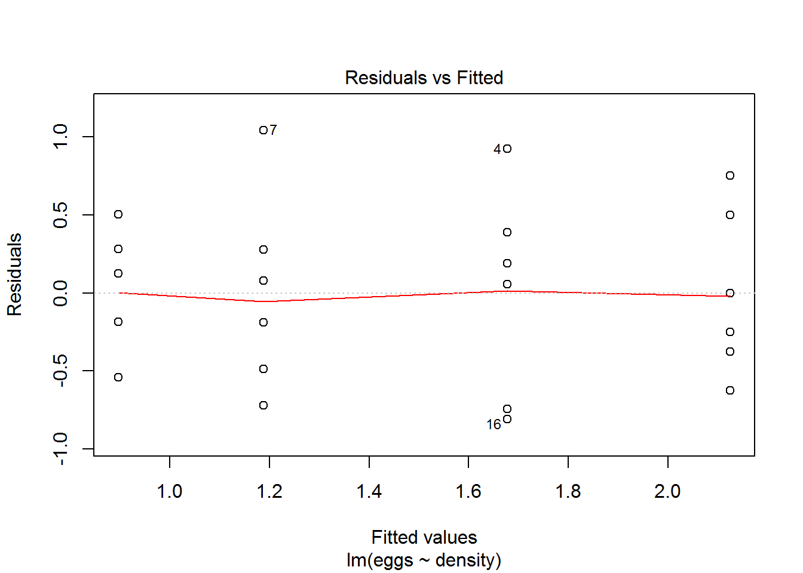
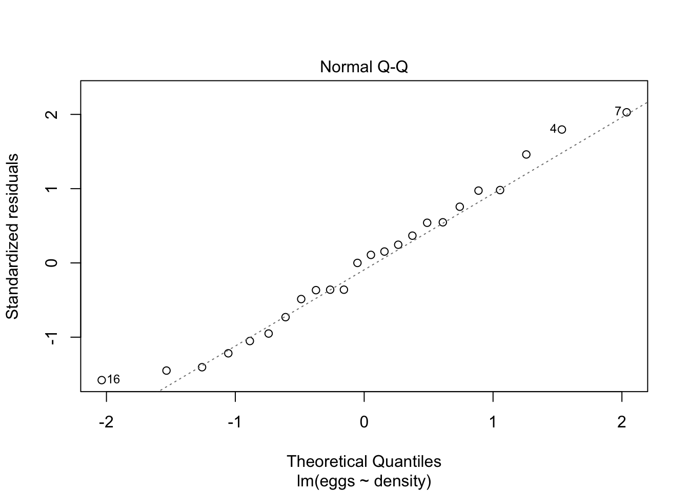
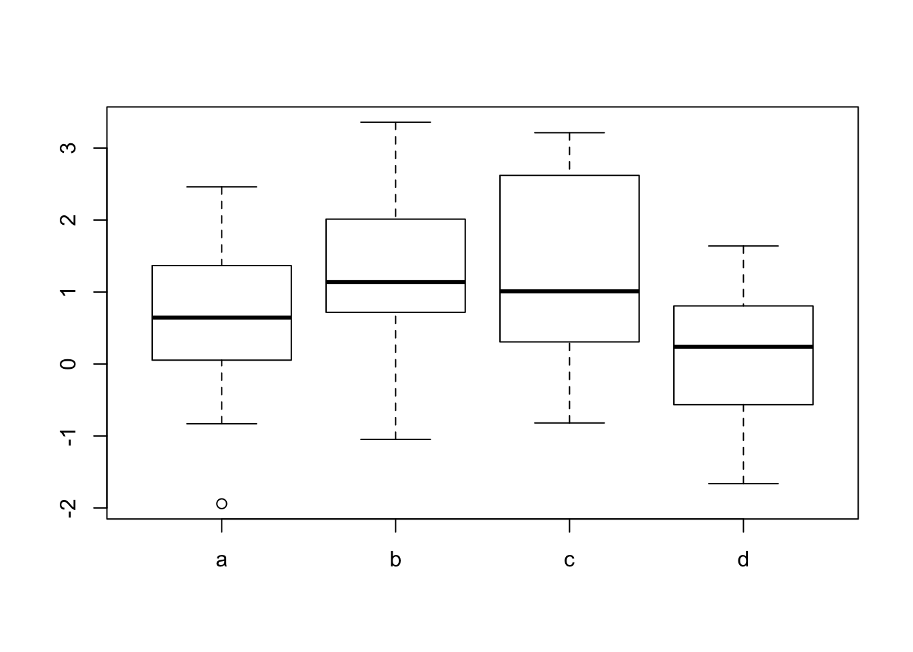

ANOVA and non parametric tests
Wouter van Amsterdam
2017-10-30
Last updated: 2017-11-15
Code version: d35db9f
Teacher: Maria Schipper
- one-way ANOVA
- F-distribution (Fischer-distribution)
- Post-hoc tests
- Assumptions of ANOVA
- non-parametric statistics
- flow-chart of the statistical Tests
ANOVA
Example data: eggs.
Set density as factor variable
require(amstR)Loading required package: amstRload(fromParentDir("data/eggs.RData"))
summary(limpet.eggs) season density eggs
spring:12 Min. : 8.00 Min. :0.3560
summer:12 1st Qu.:13.25 1st Qu.:0.9165
Median :22.50 Median :1.4330
Mean :24.50 Mean :1.4717
3rd Qu.:33.75 3rd Qu.:1.9227
Max. :45.00 Max. :2.8750 limpet.eggs$density <- as.factor(limpet.eggs$density)
xtabs((eggs)~as.factor(density)+season, data = limpet.eggs) season
as.factor(density) spring summer
8 7.250 5.500
15 6.532 3.533
30 4.696 2.434
45 3.599 1.778boxplot(eggs~density, data = limpet.eggs)
Observe: less spread in group with lower mean. Usually: spread scales with mean.
Assumptions
- Homoscedasticity: equal variances among different groups
- Normal distribution of residuals
- Independence of the measurements (this you cannot check in data; requires a good design)
You can do many tests
level_combinations <- combn(1:4, m = 2)
for (i in 1:ncol(level_combinations)) {
cat_levels = levels(limpet.eggs$density)[level_combinations[, i]]
cat("\n", cat_levels)
res <- t.test(eggs~density,
data = limpet.eggs[limpet.eggs$density %in%
cat_levels,])
print(res$p.value)
}
8 15[1] 0.2304204
8 30[1] 0.0194186
8 45[1] 0.001233278
15 30[1] 0.2212155
15 45[1] 0.0381764
30 45[1] 0.3555619Pooled variance between group 8 and 45 is lower than in group 8 and 15. So by this, the p-value will decrease.
Take total variance, split it up into componants: variance explained by groups + extra variance.
Types
- one-way: test for difference among three or more independent groups
- factorial ANOVA is used when the experimenter wants to study the effects of two or more treatment variables. includes interaction effects; e.g. two-way, three-way
- repeated measurement ANOVA is used when the subjects are subjected to repeated measures or matched observations; e.g. 4 different treatments, 4 time observations per subject; like paired T-test; can also be used for clustering / stratification.
- multivariate analysis of variance (MANOVA) is used when there is more than one dependent variable.
Model
\[y_{ij} = \hat{\mu} + \hat{\tau_j} + \hat{\epsilon_{ij}}\]
\(i = 1, ..., n_j\); \(j = 1, ..., J\); \(\sum_{j = 1}^{J}{\tau_j=0}\); \(\epsilon \sim N(0, \sigma_{\epsilon}^2)\)
Note: variance of residuals is not dependent on group
\[H_0 = \tau_1 = \tau_2 = ... = \tau_j = 0\]
\(H_1\) is that 2 or more \(\tau_j \neq 0\)
The do post-hoc test (with correction of significance). Than possibilities: test all groups against total mean. You can also do contrasts (2 groups against each other).
Optimize \[y_{ij} - \bar{y}\] residuals by overall mean; variance under \(H_0\). \[y_{ij} - \bar{y}_j\] residuals by group
\[y_{ij} - \bar{y} = \bar{y}_j - \bar{y} + y_{ij} - \bar{y}_j\]; variance under \(H_1\). \[\bar{y}_j - \bar{y}\] is variance explained by model (group effects)
| test | table |
|---|---|
| n1 | n2 |
| Source | SS | df | MS | F |
|---|---|---|---|---|
| Between | \(SS_{between}\) | |||
| Within | \(SS_{within}\) | |||
| Total | \(SS_{total}\) |
\(SS\) = Sum of squares
\(SS_{between} = \sum_{j}{n_j(\bar{y}_j-\bar{y})^2}\); \(SS_{within} = \sum_i\sum_j{(y_{ij} - \bar{y}_j)^2}\); \(SS_{total} = \sum_i\sum_j{(y_{ij} - \bar{y})^2} = SS_{between} + SS_{within}\);
\(SS_between\)
Total: \(df_{total} = \sum{(n_j)}-1\)
Within groups: \(df_{within} = \sum({n_j-1})\)
Between groups \(df_{between} = J-1\)
Mean squares = sum of squares / degrees of freedom
\[F = MS_{between} / MS_{within}\]
F is F-distributed with \(a = J-1\) and \(b = \sum({n_j-1})\) degrees of freedom
Numerator degrees of freedom: a Denomerator degrees of freedom: b
Null hypothesis: \(MS_{between} = MS_{within}\)
Always single side test: is my F statistic greater than 1?
Anova with 2 groups = T.Test with a = 1; \[T^2 = F\]
- Look up if T is example of ANOVA *
summary(aov(eggs ~ density, data = limpet.eggs)) Df Sum Sq Mean Sq F value Pr(>F)
density 3 5.284 1.7614 5.566 0.00607 **
Residuals 20 6.330 0.3165
---
Signif. codes: 0 '***' 0.001 '**' 0.01 '*' 0.05 '.' 0.1 ' ' 1Post-hoc
Do only when an overall effect is found.
choice for test is determined by:
- number of comparisons
- whether or not the multiple comparisons were planned
- other criteria (sample sizes are equal, variances are equal, multiple comparisons are orthogonal, …)
No correction with <=3 comparisons, and each correction holds unique information (= orthogonal)
Fisher’s least significant difference (LSD) test
- regular unpaired t-test, but with \(MS_{residual}\) instead of \(\sigma_{p}\), \(n-J\) degrees of freedom (=df associated within-groups SS); so for each comparison, all observations are used for estimating sigma (thus the high degrees of freedom, more power)
- P-value is not corrected for multiple comparisons
- sometimes used for a small number of planned (a priori) comparisons
Fisher’s LSD with Bonferroni correction
- Take p-value from Fisher’s LSD test multiplied by the number of tests
- Better for a small number of a priori defined comparison than LSD
- Too conservative when testing all possible pairwise comparisons
Tukey’s HSD test (or Turkey-Kramer test)
- Like T-test, but with Studentized range distribution; larger critical value
- Used for testing all possible pairwise comparisons (preferred)
Dunnett’s test
- Compare experimental groups to a control group (so less pair-wise comparisons)
Contrasts (linear combinations of means) in general
- t-tests based on weighted sum of the group means
Scheffe test
- used for controlling type I error when testing all possible linear combinations of means
TukeyHSD(aov(eggs ~ density, data = limpet.eggs)) Tukey multiple comparisons of means
95% family-wise confidence level
Fit: aov(formula = eggs ~ density, data = limpet.eggs)
$density
diff lwr upr p adj
15-8 -0.4475000 -1.356581 0.4615808 0.5269322
30-8 -0.9366667 -1.845747 -0.0275859 0.0419815
45-8 -1.2288333 -2.137914 -0.3197526 0.0059035
30-15 -0.4891667 -1.398247 0.4199141 0.4525566
45-15 -0.7813333 -1.690414 0.1277474 0.1082534
45-30 -0.2921667 -1.201247 0.6169141 0.8051677With T-tests: \[ T = \frac{\bar{X_1}-\bar{X_2}}{s_{p}\sqrt{\frac{1}{n_1}+\frac{1}{n_2}}}\]
Now use: \[s_{p} = \sqrt(MS_{residual})\]
Evaluating assumptions
Normality of residuals
Check normal distribution of residuals. This is easiest by using a linear model.
fit <- lm(eggs~density, data = limpet.eggs)
summary(fit)
Call:
lm(formula = eggs ~ density, data = limpet.eggs)
Residuals:
Min 1Q Median 3Q Max
-0.81050 -0.40333 0.02775 0.30775 1.04167
Coefficients:
Estimate Std. Error t value Pr(>|t|)
(Intercept) 2.1250 0.2297 9.253 1.15e-08 ***
density15 -0.4475 0.3248 -1.378 0.18349
density30 -0.9367 0.3248 -2.884 0.00918 **
density45 -1.2288 0.3248 -3.783 0.00117 **
---
Signif. codes: 0 '***' 0.001 '**' 0.01 '*' 0.05 '.' 0.1 ' ' 1
Residual standard error: 0.5626 on 20 degrees of freedom
Multiple R-squared: 0.455, Adjusted R-squared: 0.3732
F-statistic: 5.566 on 3 and 20 DF, p-value: 0.006071plot(fit, which = c(1,2))
Formal tests: * Kolmogorov-Smirnov test * Shapiro-Wilk test
ks.test(resid(fit), y = "pnorm")Warning in ks.test(resid(fit), y = "pnorm"): ties should not be present for
the Kolmogorov-Smirnov test
One-sample Kolmogorov-Smirnov test
data: resid(fit)
D = 0.20883, p-value = 0.2461
alternative hypothesis: two-sidedshapiro.test(resid(fit))
Shapiro-Wilk normality test
data: resid(fit)
W = 0.96941, p-value = 0.6524Caveats for formal testing for normality: * many data points means high power for testing, also for testing for non-normalitys
NB: central limit theorem weakens the reliance of ANOVA on this assumption, given homoscedascicity
NB: ANOVA robus against to non-normality when sample sizes are equal
Check homogeneity of variance
- plot residuals vs fitted (which is residuals per gropu)
Formal testing
use Levene’s test or Brown-Forsyth test * Tests the null hypothesis that the population variances are equal * In practice the test is equal to a one way ANOVA analysis on a transformation (|y_ij−y_j |) of the original data * One advantage of Levene’s test is that it does not require normality of the underlying data. * Another good test is the Brown-Forsyth test in which the mean is replaced by the median in the transformation.
NB ANOVA not robust to clear differences between variances, especially when the sample sizes differ considerably.
NB Transformations can make distributions more normal and variances more homogeneous.
Check independence of observations
Very imporant, but it can’t be checked.
When assumptions are not met
- Weighted ANOVA or weighted regression -> groups with lower variance are weighted more
- non-arametric statistics; generally non-normality is OK, but homoscedasticity is usually needed
- transform data: when non-normal distribution, and when there is also no homscedasticity
- bootstrapping can always be used
Non-parametric tests
In general: replace values with ranks, do a test on the ranks No need for assumption on distribution, but the distribution should be the same for each group. Only location can be different, spread should be comparable.
| parametric | non-parametric |
|---|---|
| 1-sample t-test or paired sample t-test | Wilcoxon signed-rank test or Sign Test (difference pos vs negative, and use binomial distribution) |
| 2-sample t-test | Wilcoxon rank sum test or Mann-Whitney test |
| one-way ANOVA | Kruskal-Wallice test |
| two-way ANOVA | no non-parametric variant |
| randomized block design | Friedman test |
| Pearson correlation | Spearman rank correlation |
Wilcoxon rank-sum and Kruskal-Wallis test assumptions
- iid-random samples
- measurements scale is at least ordinal
- population distribution functions are identical for groups except for a possible difference in location (not spread)
Kruskal-Wallis
Let’s compare Kruskal-Wallice and ANOVA
require(dplyr)
set.seed(2)
ngroups <- 4
ntotal <- 80
group_size <- ntotal/ngroups
groups <- rep(letters[1:ngroups], each = group_size)
means <- runif(min = 0, max = 2, n = ngroups)
group_means <- rep(means, each = group_size)
y <- as.vector(sapply(means, function(x) rnorm(mean = x, sd = 1, n = group_size)))View data, perform ANOVA and Kruskal-Wallice
boxplot(y~groups)
summary(aov(y~groups)) Df Sum Sq Mean Sq F value Pr(>F)
groups 3 20.11 6.703 5.098 0.00287 **
Residuals 76 99.93 1.315
---
Signif. codes: 0 '***' 0.001 '**' 0.01 '*' 0.05 '.' 0.1 ' ' 1kruskal.test(y~factor(groups))
Kruskal-Wallis rank sum test
data: y by factor(groups)
Kruskal-Wallis chi-squared = 12.514, df = 3, p-value = 0.005816Do manual Kruskal-Wallice (ANOVA on ranks)
ranks <- rank(y)
summary(aov(ranks~factor(groups))) Df Sum Sq Mean Sq F value Pr(>F)
factor(groups) 3 6757 2252.4 4.768 0.00424 **
Residuals 76 35903 472.4
---
Signif. codes: 0 '***' 0.001 '**' 0.01 '*' 0.05 '.' 0.1 ' ' 1Not exactly the same
Wilcoxon signed rank test
- Differences are mutually independent (random sample)
- measurement scale of the differences is at least interval
- the distribution of the differences is symmetric
Session information
sessionInfo()R version 3.3.2 (2016-10-31)
Platform: x86_64-apple-darwin13.4.0 (64-bit)
Running under: macOS Sierra 10.12.6
locale:
[1] en_US.UTF-8/en_US.UTF-8/en_US.UTF-8/C/en_US.UTF-8/en_US.UTF-8
attached base packages:
[1] stats graphics grDevices utils datasets methods base
other attached packages:
[1] dplyr_0.7.1 amstR_0.1.3
loaded via a namespace (and not attached):
[1] bootstrap_2017.2 survcomp_1.22.0 Rcpp_0.12.11
[4] bindr_0.1 knitr_1.17 magrittr_1.5
[7] splines_3.3.2 prodlim_1.6.1 lattice_0.20-35
[10] R6_2.2.2 rlang_0.1.1 stringr_1.2.0
[13] survivalROC_1.0.3 tools_3.3.2 grid_3.3.2
[16] data.table_1.10.4 KernSmooth_2.23-15 rmeta_2.16
[19] git2r_0.19.0 htmltools_0.3.6 assertthat_0.2.0
[22] yaml_2.1.14 survival_2.41-3 rprojroot_1.2
[25] digest_0.6.12 tibble_1.3.3 bindrcpp_0.2
[28] Matrix_1.2-10 lava_1.5 RColorBrewer_1.1-2
[31] SuppDists_1.1-9.4 glue_1.1.1 evaluate_0.10.1
[34] rmarkdown_1.6 stringi_1.1.5 backports_1.1.0
[37] pkgconfig_2.0.1 This R Markdown site was created with workflowr